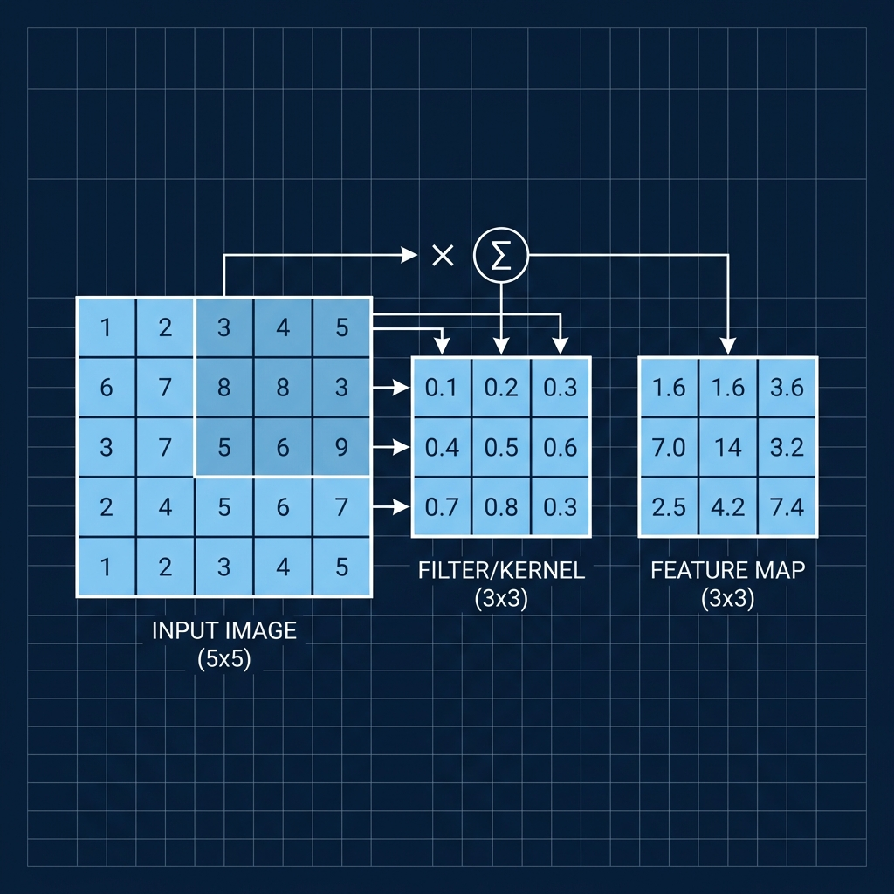
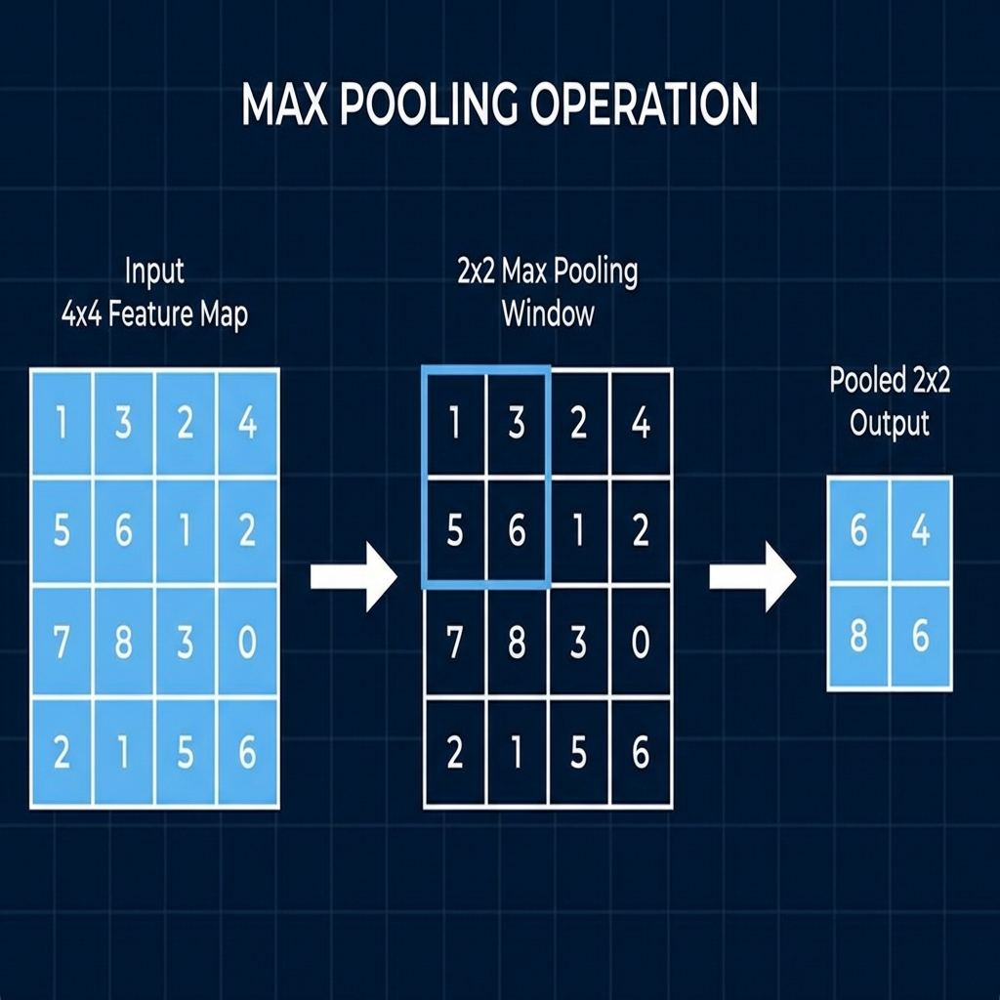
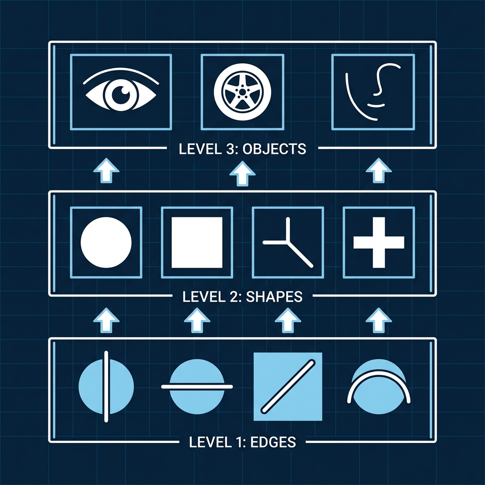
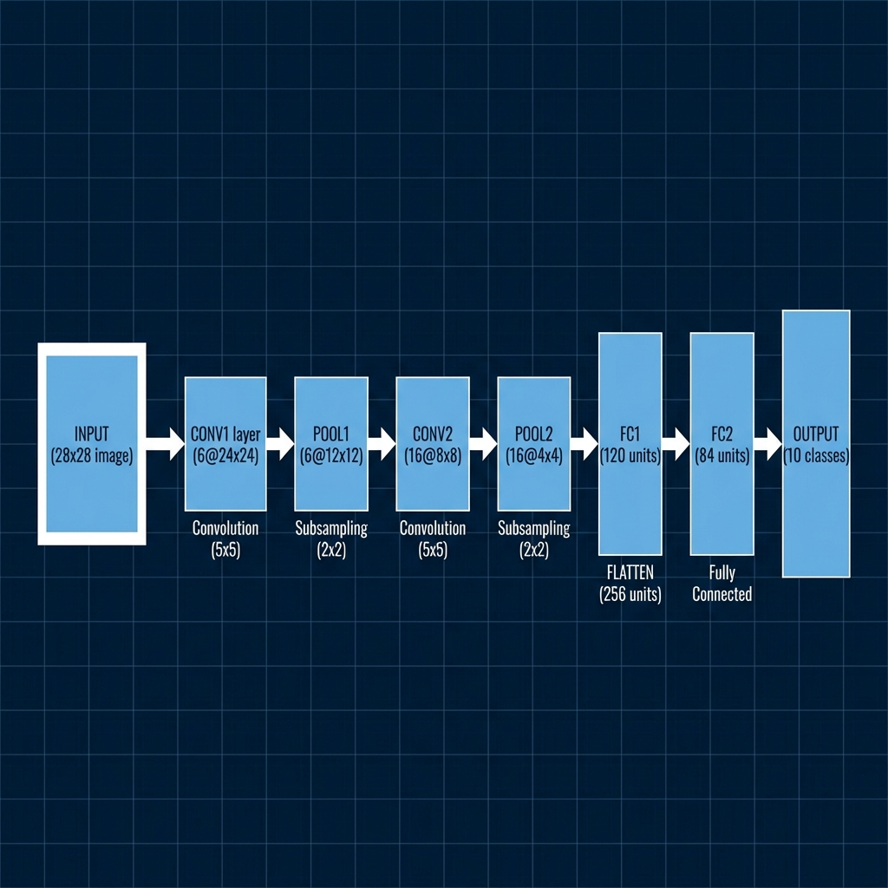

Convolutional Neural Networks (CNNs)
Course: Computer Systems Engineering
Module: Artificial Intelligence (AI)
Topic: Convolutional Neural Networks (CNNs) with PyTorch
Estimated Reading Time: 40 Minutes
By the end of this chapter, you will be able to:
1. Explain the limitations of Dense Networks for image data.
2. Describe the mechanics of Convolution and Pooling layers.
3. Calculate the output shape of a tensor passing through a CNN.
4. Implement the classic LeNet-5 architecture in PyTorch.
Last week, we introduced the concept of the Neural Network. This week, we transition to professional tools. We will introduce PyTorch, a framework that handles the calculus automatically ("Autograd"), allowing us to focus on architecture rather than implementation details. We will use this power to build a Convolutional Neural Network (CNN), the architecture that revolutionized computer vision.
1. Introduction to PyTorch
PyTorch is a deep learning framework developed by Meta's AI research lab. It has become the industry standard for research and development due to its dynamic computation graph and Pythonic nature.
1.1 Tensors
At the heart of PyTorch is the Tensor. While it mimics the behavior of a NumPy array, a Tensor is designed to run on hardware accelerators like GPUs. Mathematically, it is a multi-dimensional matrix. To visualize this:
-
Scalar (0D Tensor):
42 -
Vector (1D Tensor):
[1, 2, 3] -
Matrix (2D Tensor):
[[1, 2], [3, 4]] -
Image (3D Tensor):
[ColorChannels, Height, Width](PyTorch uses Channel-First convention) -
Batch (4D Tensor):
[BatchSize, ColorChannels, Height, Width]
In Deep Learning, we often work with 4-dimensional tensors to represent a batch of images.
1.2 Autograd (Automatic Differentiation)
The most significant advantage of using a framework like PyTorch is Autograd. In our
previous manual implementation, we had to derive and write the code for the backward pass
(backward()) by hand, ensuring every dot product and gradient was calculated correctly.
In
PyTorch, this entire process is automated. By simply calling loss.backward(), the
engine
traverses the computation graph in reverse and calculates the precise gradient for every parameter
in
the network.
2. Convolutional Neural Networks (CNNs)
Traditional Fully Connected Networks (like the one we built previously) face significant challenges when processing images. First, they ignore spatial structure; treating a pixel at coordinate (0,0) and (0,1) as completely independent inputs involves losing valuable contextual information. Second, they suffer from a parameter explosion. Connecting a standard 1000x1000 pixel image to a hidden layer of just 100 neurons would require 100 million weights, making training computationally prohibitive and prone to overfitting.
2.1 The Solution: Convolutions
Convolutional Neural Networks solve these problems by changing how neurons interact with the input. Instead of connecting every neuron to every pixel, a CNN uses a Filter (or Kernel)—a small matrix, typically 3x3 or 5x5. This filter slides across the image, looking for specific features such as vertical edges, horizontal lines, or color gradients. The result is a Feature Map, which highlights where these patterns occur in the image.

Figure 1: Convolution Operation. A 3x3 filter slides across the input image, performing element-wise multiplication and summation to produce feature maps.
2.2 Pooling (Downsampling)
Once features are detected, exact location becomes less important than relative position. Pooling layers reduce the spatial dimensions of the feature maps, typically by keeping only the maximum value in a small window (Max Pooling). This reduces the computational load by discarding up to 75% of the data while making the network translation invariant—meaning a cat in the top-left corner is recognized just as well as a cat in the bottom-right.

Figure 2: Max Pooling Operation. A 2x2 window slides across the feature map, keeping only the maximum value to reduce spatial dimensions.
2.3 The Unified Block: Conv, ReLU, Pool
A standard mistake beginners make is thinking of these layers as separate steps. In practice, they form a single Functional Unit.
-
Convolution: Extracts the features (linear).
-
ReLU: Decides if the feature is important (non-linear).
-
Pooling: Condenses the feature map (spatial reduction).
This repeated pattern (Conv -> ReLU -> Pool) allows the network to learn
increasingly
abstract representations. The first block might find "Edges"; the second block finds "Shapes"
(circles,
squares); the third block finds "Objects" (eyes, wheels).

Figure 3: Hierarchical Feature Learning. CNNs learn increasingly complex features: Level 1 detects edges, Level 2 detects shapes, Level 3 detects objects.
3. Understanding Shapes: The Flow of Tensors
The #1 error beginners face in PyTorch is a Shape Mismatch. You must understand how the dimensions of your data change as it flows through the network.
3.1 The Transformation Chain
Imagine we are processing a standard MNIST image (Grayscale, 28x28 pixels).
1. Input: [1, 28, 28] (1 Channel, 28 Height, 28 Width).
2. Pass through Conv Layer (k=5, p=2): The number of channels increases (we find
multiple features), but the height/width stays roughly the same. -> [6, 28, 28] (6
Feature Maps).
3. Pass through Pool Layer (2x2): The spatial dimensions are cut in half. ->
[6, 14, 14].
4. Repeat: Another Conv/Pool block might take us to -> [16, 5, 5].
3.2 The Flattening Problem
At the end of the feature extraction, we have a 3D volume of data
(16 channels x 5 height x 5 width). But our final Classifier (Fully Connected Layer)
expects a flat list of numbers (a 1D Vector).
Before we can classify, we must Flatten the tensor:
$$ 16 \times 5 \times 5 = 400 $$
Our 1D Vector will have a length of 400. This is why you will see x.view(-1, 400) in
the
code. If you calculate this number wrong, your code will crash.
4. The Architecture: LeNet-5
Proposed by Yann LeCun in 1998, LeNet-5 is the foundational architecture of modern computer vision. It was originally designed to recognize handwritten zip codes on mail.
The architecture follows a funnel-like structure. It begins with Convolutional Layers to extract features, followed by Pooling Layers to compress the data. This process is repeated to extract higher-level features. Finally, the spatially compressed feature maps are flattened into a 1D vector and passed through Fully Connected Layers to perform the final classification. We will implement this classic structure—Conv, Pool, Conv, Pool, Linear, Output—to solve the MNIST classification problem.

Figure 4: LeNet-5 Architecture. The network processes a 28x28 input image through convolutional and pooling layers, then flattens and classifies via fully connected layers to output 10 class predictions.
5. Lab Preview: LeNet in PyTorch
In this week's lab (Experiment 1), we will implement the LeNet-5 architecture using PyTorch. This lab
moves away from raw math and focuses on the high-level API torch.nn.
- Define the Network: You will create a class that inherits from
nn.Module, defining the layers (Conv2d,Linear) in the constructor. - Forward Pass: You will implement the
forward()method to define how data flows through these layers. - Training: You will use the
torch.optimmodule to handle the weight updates, replacing our manual Gradient Descent loops.
This lab demonstrates the massive productivity gain provided by modern Deep Learning frameworks.
6. Summary
We have transitioned from the manual mechanics of backpropagation to the automated efficiency of PyTorch. We introduced the Convolutional Neural Network, which uses filters and pooling to efficiently process image data. This week's lab will generate a fully functional LeNet-5 model, capable of reading handwritten digits with high accuracy.
Test Your Knowledge
Ready to check your understanding of this week's material? Take the interactive quiz now!
Start Quiz